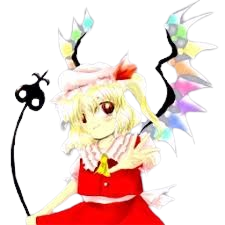

Flandre é frequentemente vista como:
Infantil e imprevisível – age de forma inocente, mas completamente caótica.🧠 Consciência limitada
Flandre não tem plena noção das consequências de seus atos:
Age por impulso
Não mede o perigo de seus poderes
Pode destruir algo apenas por curiosidade
Isso a torna extremamente perigosa mesmo sem intenção maligna.
🎭 Comportamento infantil
Ela demonstra traços típicos de uma criança:
Gosta de brincar
Fica entediada com facilidade
Pode fazer birra quando contrariada
Mas suas “brincadeiras” podem ser destrutivas.
🌑 Isolamento
Flandre passou muito tempo isolada dentro da mansão:
Tem pouco contato social
Não entende bem as relações humanas
Depende bastante da irmã Remilia
Isso contribui para seu comportamento instável.
🩸 Relação com os outros
Flandre tem poucas relações diretas:
É irmã de Remilia Scarlet
É cuidada por Sakuya Izayoi
Raramente interage com visitantes
Apesar disso, pode demonstrar afeto de forma sincera.
Habitante da Mansão do Diabo Escarlate
Flandre vive dentro da Mansão do Diabo Escarlate, geralmente em áreas isoladas, passando grande parte do tempo sozinha.
Portadora de um poder destrutivo extremo
Embora não tenha uma ocupação formal, Flandre é uma das entidades mais perigosas de Gensokyo devido às suas habilidades únicas.
Destruição absoluta
O poder principal de Flandre é destruir qualquer coisa:
Ela enxerga o “olho” ou ponto fraco de qualquer objeto ou ser
Ao apertar esse ponto, pode destruir instantaneamente o alvo
Esse poder funciona em qualquer coisa, física ou abstrata
É uma habilidade considerada uma das mais perigosas de Gensokyo.
Força e velocidade sobrenaturais
Como vampira, Flandre possui:
Força física enorme
Velocidade extrema
Grande resistência
Manipulação de energia
Ela pode disparar ataques de energia caóticos e extremamente destrutivos, muitas vezes sem controle total.
Voo
Flandre pode voar livremente, participando de batalhas aéreas com grande mobilidade.
Seu poder bruto, combinado com sua instabilidade emocional, faz dela uma das personagens mais perigosas de Gensokyo.

Espécie: Vampira
Título:Sister of the Devil (Irmã do Diabo)